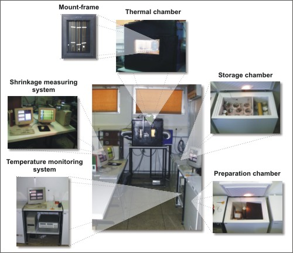

Sistem za merjenje krčenja polimernih vlaken
| NAROČNIK: | Center za eksperimentalno mehaniko (CEM), BASF AG | |
| NAMEN: | Merjenje dinamike krčenja poliamidnih vlaken | |
| STROJNA OPREMA: | Digitaliztor
videoslike DataTranslation DT2853 Komunikacijski vmesnik HP82335 HP-IB CCD Kamera ULTRAK KC6501MP Data Acquisition HP 3852 PC Pentium P75 računalnik |
|
| MERILNA VERIGA: | Merjenje
deformacij z videoekstenziometrom Merjenje temperature s PT100 in termočleni tipa K (šest termočlenov) |
|
| PROGRAMSKA OPREMA: | DOS
program za merjenje optično deformacij: Extensio.exe DOS program za merjenje temperature: Monitor.exe |
|
| LETO IZDELAVE: | 1999-2000 | |
 |